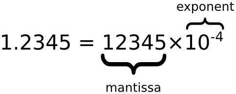

JavaScript NumberObjeto
JavaScript solo tiene un tipo de número.
Los números se pueden escribir con o sin punto decimal.
Números en JavaScript
Los números de JavaScript se pueden escribir con o sin punto decimal:
Ejemplos
var x=34; // sin punto decimal
Los números muy grandes o muy pequeños se pueden escribir mediante notación científica (exponencial):
Ejemplos
var z=123e-5; // 0.00123
Todos los números de JavaScript son de 64 bits
JavaScript no es un lenguaje tipado. A diferencia de muchos otros lenguajes de programación, JavaScript no define diferentes tipos de números, como enteros, short, long, punto flotante, etc.
En JavaScript, los números no se dividen en tipos enteros y de punto flotante; todos los números son de tipo punto flotante. JavaScript usa el formato de punto flotante de 64 bits definido por el estándar IEEE754 para representar números. Puede representar el valor máximo (Number.MAX_VALUE) como±1.7976931348623157e+308, el valor mínimo (Number.MIN_VALUE) como±5e-324。
Este formato almacena el número en 64 bits, donde los bits 0 a 51 almacenan el número (fracción/mantisa), los bits 52 a 62 almacenan el exponente, y el bit 63 almacena el signo:

| Valor (también conocido como Fraction/Mantissa) | Exponente (Exponent) | Signo (Sign) |
|---|---|---|
| 52 bits (0 - 51) | 11 bits (52 - 62) | 1 bit (63) |

Precisión
Los números enteros (sin punto decimal ni notación exponencial) tienen como máximo 15 dígitos.
Ejemplos
Pruébalo »
El número máximo de dígitos decimales es 17, pero las operaciones de punto flotante no siempre son 100% precisas:
Octales y hexadecimales
Si el prefijo es 0, JavaScript interpreta la constante numérica como octal; si el prefijo es 0 y "x", lo interpreta como hexadecimal.
| Nunca escribas un cero delante de un número, a menos que necesites realizar una conversión octal. |
De forma predeterminada, los números de JavaScript se muestran en decimal.
Pero puedes usar el método toString() para generar valores en hexadecimal, octal y binario.
Ejemplos
myNumber.toString(16); // devuelve 80
myNumber.toString(8); // devuelve 200
myNumber.toString(2); // devuelve 10000000
Pruébalo »
Infinito (Infinity)
Cuando el resultado de una operación numérica excede el límite superior que JavaScript puede representar (desbordamiento), el resultado es un valor especial de infinito (infinity), representado en JavaScript como Infinity. De manera similar, cuando el valor de un número negativo excede el rango negativo que JavaScript puede representar, el resultado es infinito negativo, representado en JavaScript como -Infinity. El comportamiento de los valores infinitos es el mismo que esperamos: las operaciones de suma, resta, multiplicación y división entre ellos dan como resultado infinito (conservando, por supuesto, su signo).
Ejemplos
while (myNumber!=Infinity)
{
myNumber=myNumber*myNumber; // repite el cálculo hasta que myNumber sea igual a Infinity
}
Pruébalo »
Dividir por 0 también produce infinito:
NaN - valor no numérico
La propiedad NaN es un valor especial que representa un valor no numérico. Esta propiedad se usa para indicar que un valor no es un número. Se puede establecer el objeto Number a este valor para indicar que no es un valor numérico.
Puedes usar la función global isNaN() para determinar si un valor es NaN.
Ejemplos
isNaN(x); // devuelve true
var y = 100 / "1000";
isNaN(y); // devuelve false
Pruébalo »
Dividir por 0 es infinito, y el infinito es un número:
Los números pueden ser números u objetos
Los números se pueden inicializar con datos, como x = 123;
Los objetos numéricos de JavaScript se inicializan con datos: var y = new Number(123);
Ejemplos
var y = new Number(123);
typeof(x) // devuelve Number
typeof(y) // devuelve Object
Pruébalo »
Ejemplos
var y = new Number(123);
(x === y) // es false, porque x es un número e y es un objeto
Pruébalo »
Propiedades de Number
| Propiedad | Descripción |
|---|---|
| Number.MAX_VALUE | Valor máximo |
| Number.MIN_VALUE | Valor mínimo |
| Number.NaN | No numérico |
| Number.NEGATIVE_INFINITY | Infinito negativo, devuelto en desbordamiento |
| Number.POSITIVE_INFINITY | Infinito positivo, devuelto en desbordamiento |
| Number.EPSILON |
Representa la diferencia entre 1 y el Number más pequeño que es mayor que 1. |
| Number.MIN_SAFE_INTEGER | Entero seguro mínimo. |
| Number.MAX_SAFE_INTEGER | Entero seguro máximo. |
Métodos de Number
| Método | Descripción |
|---|---|
| Number.parseFloat() | Convierte una cadena en un número de coma flotante, y el método globalparseFloat()tienen el mismo efecto. |
| Number.parseInt() |
Convierte una cadena en un número entero, y el método globalparseInt()tienen el mismo efecto. |
| Number.isFinite() | Determina si el parámetro pasado es un número finito. |
| Number.isInteger() | Determina si el parámetro pasado es un número entero. |
| Number.isNaN() | Determina si el parámetro pasado es NaN. |
| Number.isSafeInteger() | Determina si el parámetro pasado es un entero seguro. |
Algunos métodos en el prototipo de Number
| Método | Descripción |
|---|---|
| toExponential() | Devuelve una cadena con la forma exponencial de un número, como: 1.23e+2 |
| toFixed() |
Devuelve la representación con el número especificado de decimales. var a=123; b=a.toFixed(2); // b="123.00" |
| toPrecision() |
Devuelve un número con una precisión especificada. En el siguiente ejemplo, en a=123, el 3 desaparece debido a la limitación de precisión: var a=123; b=a.toPrecision(2); // b="1.2e+2" |